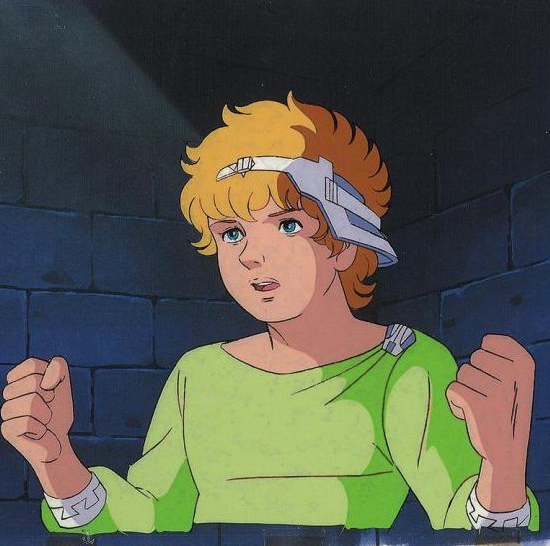

Much ado about William Shakespeare
William Shakespeare (bapt. 26 April 1564 – 23 April 1616) was an English playwright, poet, and actor, widely regarded as the greatest writer in the English language and the world's greatest dramatist. He is often called England's national poet and the "Bard of Avon" (or simply "the Bard"). His extant works, including collaborations, consist of some 39 plays, 154 sonnets, three long narrative poems, and a few other verses, some of uncertain authorship. His plays have been translated into every major living language and are performed more often than those of any other playwright.

Here we see an artists impression of how William may have looked as a teenager.
Some key moments in William's life.
- 1564 - William Shakespeare born in Stratford-upon-Avon
- 1582 - Shakespeare marries Anne Hathaway
- 1583 - Shakespeare’s first child, Susanna, is born
- 1593 - Shakespeare’s first printed poem, Venus and Adonis, appears
- 1594 - Shakespeare’s first printed play, Titus Andronicus, appears
- 1599 - Shakespeare’s father is granted a confirmation of arms; Shakespeare’s acting company takes down its old theater and uses the timber to build the Globe
- 1601 - Shakespeare’s father, John Shakespeare, dies
- 1603 - Shakespeare’s acting company, the Lord Chamberlain’s Men, becomes the King’s Men at the accession of James I; Hamlet appears in print
- 1608 - Shakespeare’s mother, Mary (Arden) Shakespeare, dies; his granddaughter Elizabeth is born
- 1609 - Shakespeare’s Sonnets appears in print
- 1613 - Shakespeare purchases the Blackfriars gatehouse in London; the Globe burns down during a performance of Henry VIII and is rebuilt within a year
- 1616 - Shakespeare writes his will; his daughter Judith marries Thomas Quiney; Shakespeare dies